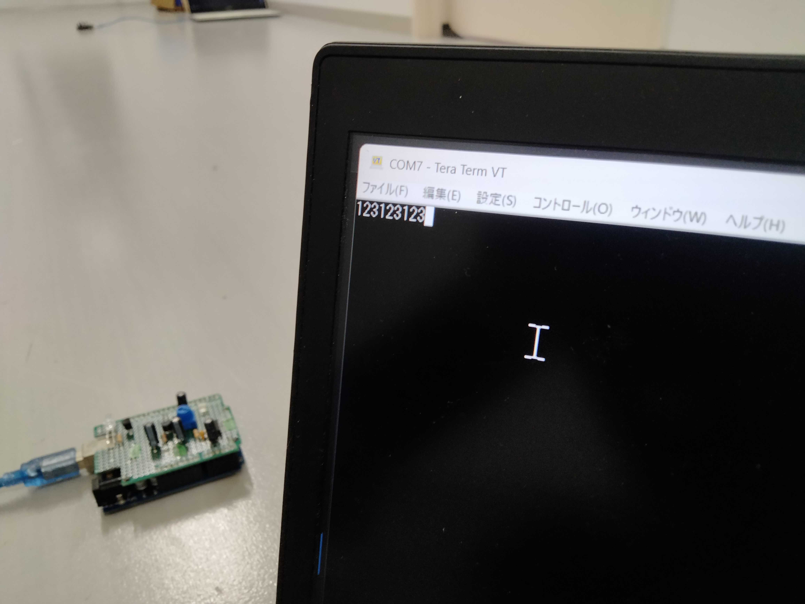
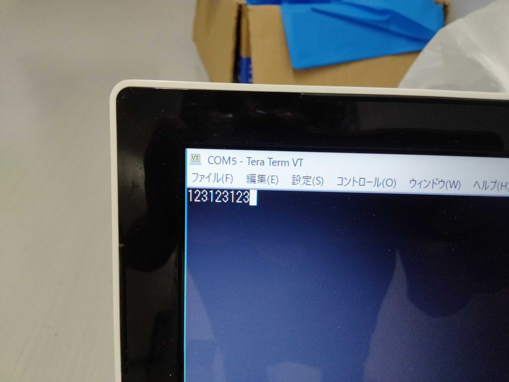

光モールストランシーバを改造してデジタル通信機を作った
これは大学無線部Advent Calendarの2日目の記事です。
自己紹介
はじめまして、JA1YAD所属のJR2HAOです。学部では機械工学を専攻しています。
アドベントカレンダーの季節がやってきましたね！と言いつつ書くのは初めてです。
というかブログもまともに書いたことがないので、github.ioのマイページに直でHTMLを突っ込んでいます……（手元でMarkDownからHTMLを生成しましたよ！）
それなのにとりあえず空いてるところを選べばいいやと思って2日めに突っ込んでしまったので焦って記事を作成しています……
ええ、ご想像通り講義はいつも前の方に座っていますよ（ただし出席できた場合に限る）。
何を書こうかな～と思って、1,2週間でも余裕があればSDRやらで実験でもしてそれを記事にしてやろうとも思わないこともなかったのですが(どっち？)、さすがに時間がないので工大祭の企画展示品についてまとめます。
トランシーバを改造する経緯
さて何を作って展示したかというのが表題の通りデジタル通信機です。
その名の通りデジタルな通信をするもので、とってもデジタルです！
いかがでしたか？
じゃあないんですよ。デジタルというのは情報の処理の仕方であって、
その通信機がどういう目的でどういう情報を送りどういう媒体を使うかが全くわかりませんね。
昨今はDXとかIoTとかAIとか言っておけば人が食いつくようになっていますが
そんなものは手段に過ぎなくて、それを使ってどのようなことを実現するのか何が可能になったのかが大事です。
にもかかわらずデジタル化された流行りの云々をさもすごいことをやっているかのように見せて人々の気を惹いている企業・省庁その他団体ならびにそれに踊らされて何もわかってないのにすごいすごいとほざく一般の連中は頭にきますが
そんなことはどうでもいいんです。閑☆話☆休☆題
作ったものは光のON-OFFでbit列を生成してテキストを送受信するRTTY的な？ものです。
ことの発端はJA1YAD部員がハムフェアへ行ったときにFTR102を頂いたことです。
FTR102とはキーイングに応じて光を点灯・消灯させ、受信側でその光を音に変えてモールス符号を送りあうことができるという光モールストランシーバです。
わたしが驚いたのはその通信可能距離です。
今までの電子工作は受光に関して知識がなかったため、とりあえずCdSセルを使っておこうとなっていました。
そのため数メートルも離れてしまうと電子工作用の小さなLEDに対する感度がぐっと悪くなる傾向がありました。
また可視光(もしかすると他の波長も？)すべてを受光するため部屋の電灯が雑音となることもあります。
しかし使い勝手が良いので使うときはなんとなくでCdSセルを使っていました。
ではFTR102はどうかというと受光にフォトダイオードを使っており感度がよく、十数メートルの距離で通信することができました。
また送信していないときのノイズがほぼ0だったため電圧を読んでON-OFFを判断するのが簡単だろうと思いbit列の送受信を思いつきました。

Fig.1 FTR102, 画像はFTR102（光モールストランシーバ）より引用。
作ったもの
今回作ったものはFTR102改造、Arduinoを使った光デジタル通信トランシーバです。
FTR102についてはR16lab氏の記事
FTR102（光モールストランシーバ）- r16lab scrapboxを、
またデジタル通信プログラムについては
Data Transfer Using LED Light (Li-Fi) - Arduino Project HUBを参考にしました。

Fig.2 作ったもの。Arduinoに簡単に取り付けられるようにカスタムシールド上に製作。
プロトコル
1byteの文字を読むためのタイムチャートがFig.3です。
プロトコルと言っても大したものではないんですが、そのまま文字コードを送っても受信側はびっくりしてしまうのでまずは最初にStart bitを送ることにします。
それから1byteを送ったあとデータが正しく受け取れているかどうかの偶数パリティCheck sum bitを送ります（あってるかどうかを1/2の確率でしか判定できないのは果たして意味があるのか、というツッコミはなしで）。

Fig.3 プロトコル概要。0x4A=Jのタイムチャート。
そんなわけでStart bitが1bit, データ部が8bit, Check sumが1bit
の10bitで構成されています。
また受信側ではチェックサムをデータ部から再計算し、
送られてきたCheck sumと合っていれば1bitの応答を返すようにしました。
逆にもし再計算されたCheck sumと送られたものが一致しない場合は応答は返さず、
送信側は応答が返るまで送信し続けることになります。
送り合うデータはPCからシリアル通信で送受信することにしました。
工大祭当日はTeraTermを使いました。
電子回路
送信部
もともとのFTR102の特徴としてマイコンを使っていないという点があります。
しかしテキストデータをビット列に変換することが求められるため本家のFTR102が目指す、マイコン等デジタル回路を用いないということを諦めArduinoを使うことにしました。
回路図はFig.4です。マイコン側がON-OFFの制御をするので実際に光らせる部分はシンプルな構成となっています。
Arduinoの信号で直接LEDを駆動させることもできますが、高輝度LEDをより強く光らせたかったためArduinoから信号を受け取りNPNトランジスタ(2SC1815)で増幅しています。
データシート上ではこの回路構成で、最大約65mAの電流が流れ、これはLEDの定格70mAぎりぎりとなっています。
結構まぶしいです。

Fig.4 送信部回路図
受信部
FTR102とほぼ同じです！なのでそっちを見てください！（投げやり）
いろいろコンデンサの容量を変えたりして受信波形を調整しましたが結局本家がよくできているんだなあという結論に至りました。
変えた点といえば終段のオペアンプ増幅部を2段にしたことです。フォトICダイオードで受け取った光信号を増幅するだけではきれいな0,1の信号にならず、曖昧な電圧になってしまうためです（ただ実装に問題がありそうなので改良が必要……）。
実験結果
5m離れたところからの送受信をしました。
 
Fig.5 送信機側（左）と受信機側（右）シリアルコンソール画面
それから伝送路、あるいは受信側の問題で応答が返らなかったときに続けて送信するといざ実際に伝送路・受信側が正常に機能し始めると、データ列やチェックサムをStart bitとして認識してしまいます。そのため誤ったデータを受信してしまうという事になってしまいました。
こうなるともう確率1/2ということも含めてチェックサムはほぼ機能してないと言えるでしょう。
まあでも誤り訂正してます！受信側から応答が返ります！ってかっこいいですよね？？
シリアルコンソール画面に受信された文字が一文字ずつピロピロピロ～と表示されるのも、いかにもハッカーになった気分でとても楽しいです。
考えてみればやってることはリモコンと同じではあるのですが、赤色LEDを使ってチカチカさせるととても面白いです。
改良点
- 文章全体でチェックサムをかける
- スタートビットとデータ列の区別ができるようなプロトコルへ変更
- 応答速度の早いフォトダイオードを用いて受信することによるデータレートの向上
まとめ
とってもデジタルでしたね！（？）
もうデジタルはお腹いっぱいなので次回の工大祭はアナログPID制御でなんか作る！かも……デュエルスタンバイ！
Advent calendar, 明日はtokinasinさんのJCCコードを地名に変換するSKK辞書を作ってみましたをお楽しみに！（大学無線部Advent Calendarの記事はこちらから確認できます）